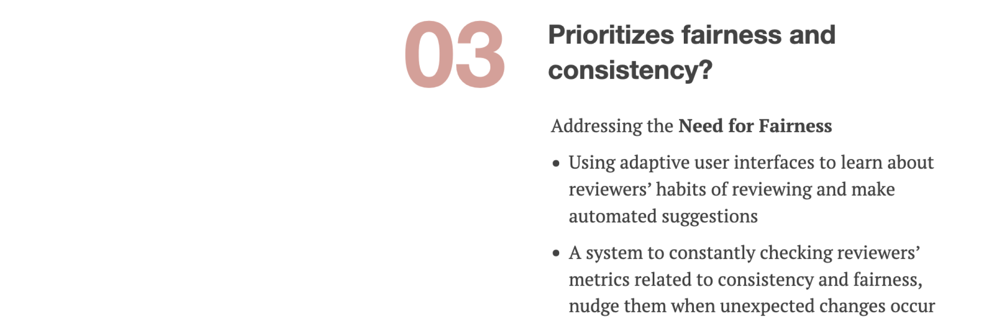

Overview
Based on our research, we summarized the three main directions we wanted to explore to create a better
reviewing experience in ApplyGrad:
How might we reduce cognitive burden for reviewers with a solution that:


